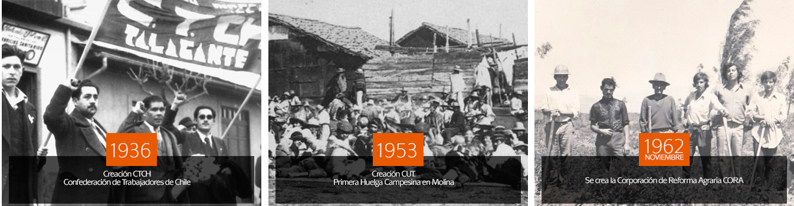
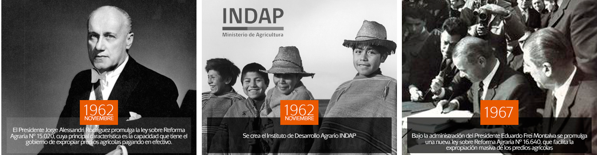
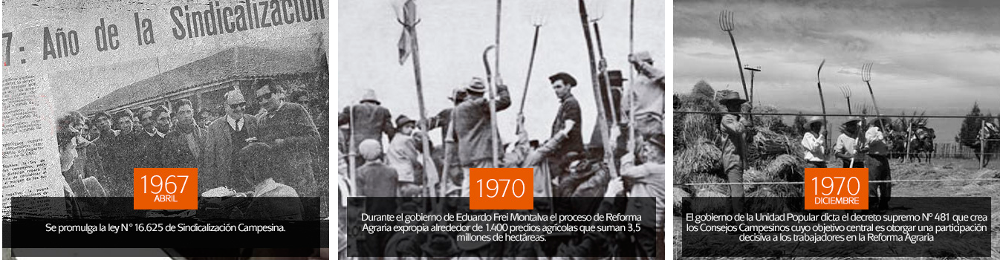
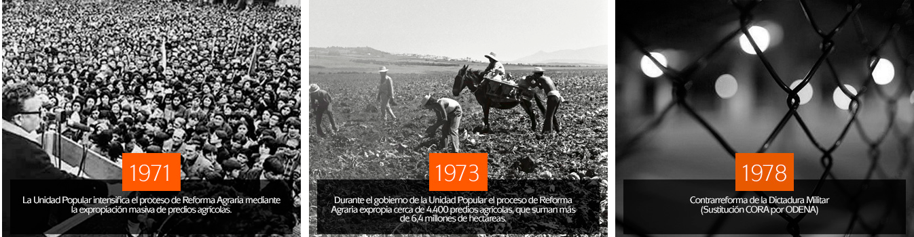

-
 Maule, 50 años protagonistas
Maule, 50 años protagonistas
en agricultura
Conmemoración de los 50 años de la reforma agraria
Cronología de la Reforma Agraría
- 
- 
- 
- 
 VER HITOS DEL PROCESO
VER HITOS DEL PROCESO
Presentación
La historia de un país se enseña a partir de lo formal, historia de los personajes famosos que trascienden a los libros. Pero también está la historia de las personas que, aun cuando, no fueron famosas tienen mucho que contar sobre cómo se vivió un periodo determinado. En ese sentido, todos somos protagonistas de la historia desde el lugar donde nos toca estar.
Este año se cumplen los 50 años de la promulgación de la ley de Reforma Agraria en Chile y la Universidad de Talca quiere contribuir en su celebración por medio de diferentes eventos y estudios. Queremos reconstruir la historia de la Reforma Agraria, recolectar testimonios y registros de lo que ocurrió durante ese tiempo e identificar aspectos que contribuyan a reconocer lo que hoy somos como país y maulinos.
Una de las actividades es el desarrollo del estudio “Medio Siglo de la Reforma Agraria en la Región del Maule. Hechos y testimonios en documentos y medios de comunicación regionales” financiado por el Consejo Nacional de la Cultura – Región del Maule. Con lo que se espera elaborar un video formativo exhibido en establecimientos educacionales y que contribuya al diálogo entre generaciones.
Otra actividad, es la realización de un Seminario, el cual se efectuará el 28 de julio de 2017, donde se han convocado especialistas y protagonistas que podrán dar cuenta de aspectos relevantes del período.
Además de eventos conmemorativos que se llevarán a cabo en las comunas de Linares y Molina el día 27 del mismo mes.
“Estamos muy emocionados de conocer cómo se vivió la Reforma Agraria en la Región del Maule” señala Paula Manríquez, directora del proyecto (docente Escuela de Agronomía).


Noticias

Protagonistas y conocedores de la reforma agraria conmemoran 50 años de este proceso histórico
El próximo 28 de julio, la universidad realizará el seminario historia del proceso de reforma agraria en chile. La cita es el salón abate molina...

El factor social como característica principal de la Reforma Agraria
La tenencia de la tierra es un elemento clave en la historia de Chile, según el profesor Christian Hausser, del Instituto de Estudios Humanísticos Juan Ignacio Molina de la Universidad de Talca.

UTALCA y Bienes Nacionales buscan rescatar historia del agro
Fundo que perteneció al expresidente en el sector de santa rita, en la comuna de pelarco, cuenta con tres mil metros cuadrados construidos y está emplazado en un terreno de aproximadamente...

Se inicia conmemoración de los 50 años de la reforma agraria
La universidad está trabajando en un proyecto Fondart para recopilar documentos sobre la reforma. En la web www.legadoagrario.utalca.cl la ciudadanía también podrá aportar con sus testimonios.

Fondos de Cultura 2017 entregarán más de 564 millones de pesos a 65 iniciativas del Maule
Los resultados fueron dados a conocer por la Directora Regional de Cultura, Mariana Deisler...
VER TODAS LAS NOTICIAS